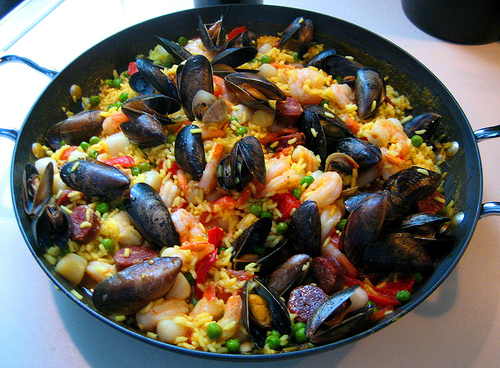

Broiled Seafood
Seafood medley of shrimp,scallops,mussels and fresh lobsters over a bed of vegetable

Coastal Beaufor spots
Going out to eat tapas is one of the most popular activities in Chaungthar.
Liver, Lobster and Locusts
Boqueria Penn Quarter is offering an amazing Bottomless Brunch all spring and summer long!
Pennsylvania
Weekend Brunch, tapas edition - sweet and savory brunch small plates

A delicious Castellón
But there's a lot of misunderstanding about what exactly tapas means.
Paella, one of the favorite dishes
Tapas are one of Spain’s culinary staples. Eaten either as snacks over a drink or making up a meal when a selection is ordered, this is the best way to sample Spanish cuisine.
An Insider’s Guide to Seafood
Coming in endless varieties and catering to all cravings and preferences, the choice can be overwhelming.
Brunch-Yelp
From potatoes to meat, seafood, and vegetables, you will be forgiven for having eyes much bigger than your stomach.

Best Tapas
If you want to try various dishes from different regions of Spain, come to El Boquerón! poultry, fish and shellfish.